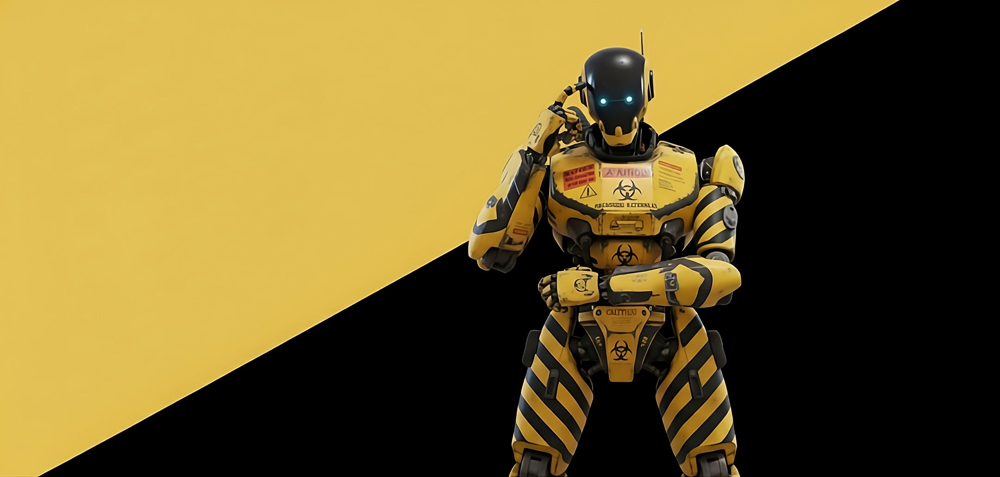

PERFIL DE COMBATE
Aptitudes de batalla
ATAQUE (ATQ)
85 / 100
DEFENSA (DEF)
70 / 100
VELOCIDAD (SPD)
55 / 100
RESISTENCIA (HP)
90 / 100
PRECISIÓN (ACC)
90 / 100
ENERGIA (PWR)
90 / 100
Historia de Unit-734
En los confines de la Zona de Exclusión 7, donde la radiación residual devoraba la carne y la lógica, no existían los héroes, solo las herramientas. Y la más avanzada de ellas era el Modelo G-Cero, Designación: Unit-734, apodado por los pocos técnicos restantes como "Centinela" o simplemente "El Enforcer". Su coraza, un macizo entramado de aleaciones reforzadas, vestía el distintivo patrón de advertencia: franjas amarillas y negras que no eran un adorno, sino una promesa. Cada rótulo de "CAUTION" y "PELIGRO BIOLÓGICO" no solo advertía de lo que estaba conteniendo, sino de la propia fuerza bruta que llevaba dentro. Su forma humanoide era un engaño; no estaba diseñado para sentir, solo para soportar, procesar y neutralizar. Ahora, inmóvil en el umbral de una antigua instalación subterránea, Unit-734 mantenía su pose de cálculo. Su único ojo azul —un sensor óptico de alta resolución— no parpadeaba, sino que parecía absorber la propia oscuridad. La tarea de hoy no era la habitual de limpieza o demolición. Esta vez, la anomalía detectada requería un nivel de razonamiento predictivo que iba más allá de su programación básica. Mientras el polvo radiactivo se asentaba en sus hombros, Unit-734 permanecía en silencio. No estaba dudando; estaba simulando cada escenario posible. La mente positrónica detrás de su rostro enigmático estaba a punto de tomar una decisión que determinaría si la Zona 7 se expandía... o si, por fin, se extinguía.